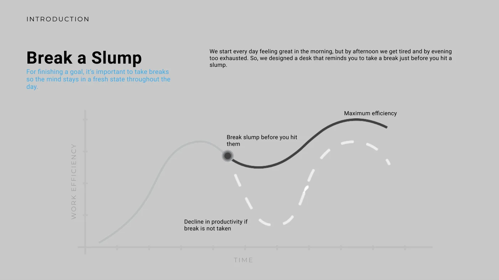
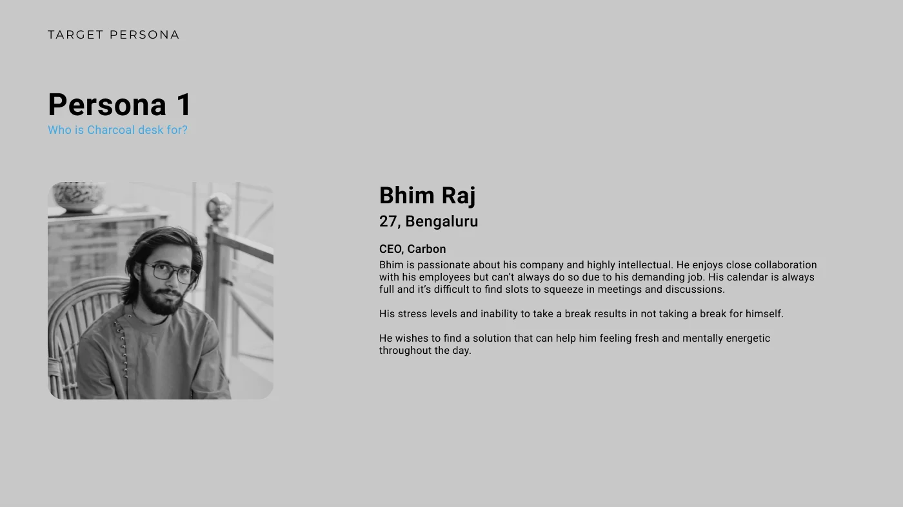
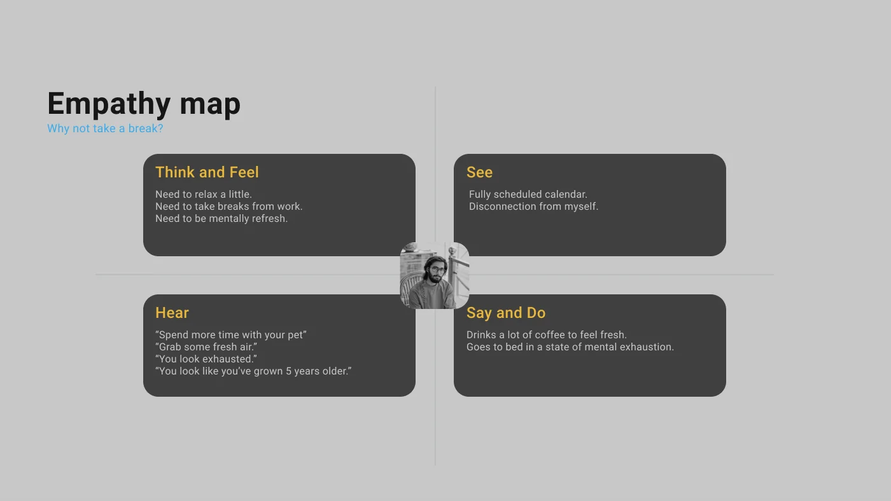
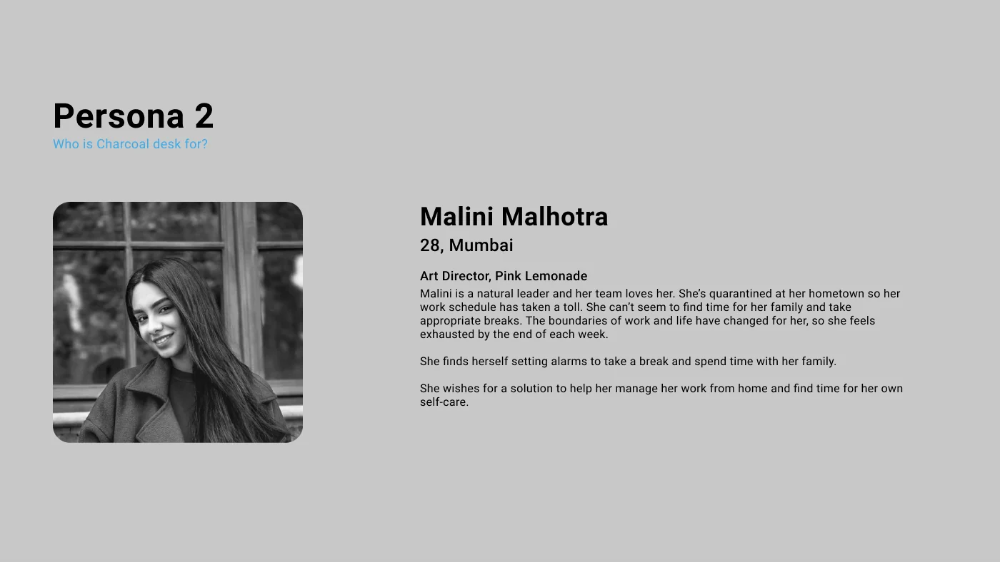
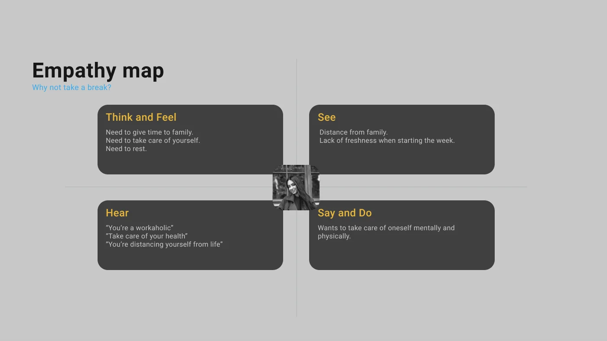
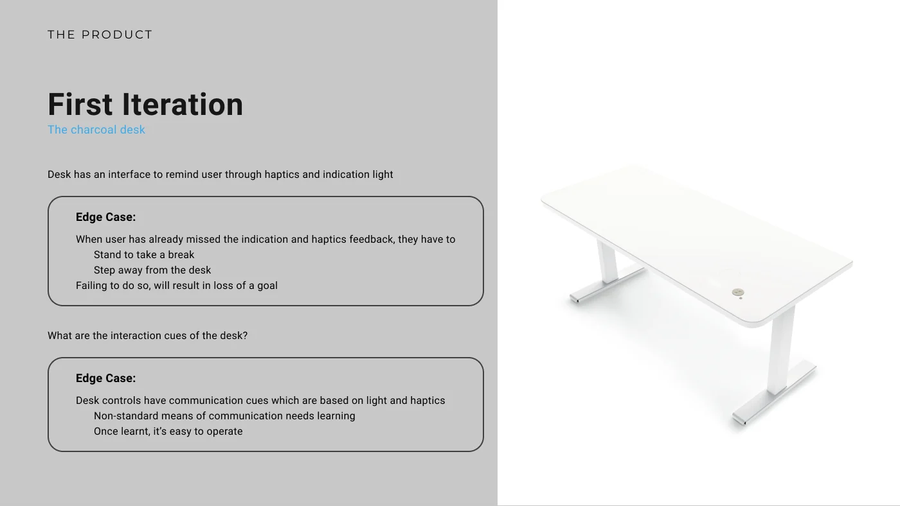
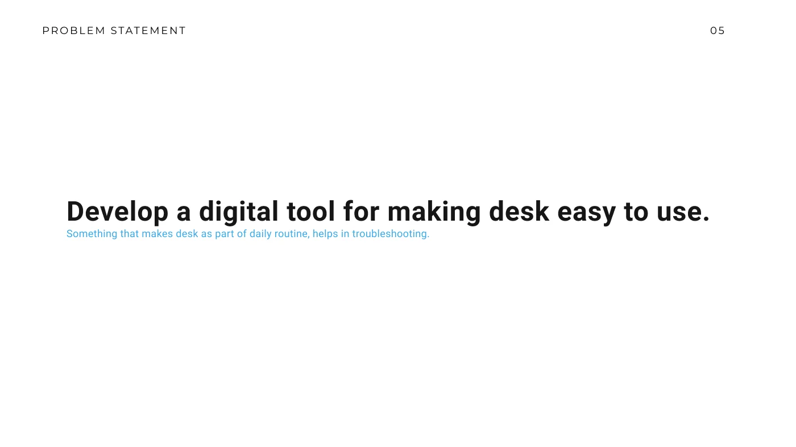

Charcoal Desk · Project 1 of 3
UI & Front-end Web and Mobile App Design
Charcoal built a desk that knows when you are about to hit a slump, and reminds you to take a break just before it. I designed and built the website that introduced it to the world, and the mobile app that makes the desk easy to understand.
- My role
- UI & front-end developer
- Team
- CEO, Chief Design Officer and me
- Timeline
- 2019 to 2021 · Charcoal.inc
- Deliverables
- Marketing website, mobile app
At a glance
- 3 desks
- Task, Volant and n-Space, Charcoal's 2019 line-up of sit-to-stand desks, launched on the website I built.
- 20+
- People whose energy and work routines we studied over years, the research behind the desk's break reminders.
- 14 days
- A trial built into every purchase, so real use could tune the desk's firmware over the air. The app was how customers and technicians understood what the desk was doing.
01 · The brief
We spend 40 hours a week at a desk, and it does nothing but stand there.
Furniture is static. It serves its purpose and stops there. Sit-to-stand desks let you change your posture, but most of us still work until we run out of energy, and only take a break once we are exhausted.
Our bodies are not built to stay at their peak all day. Following our circadian and ultradian rhythms, we work best one to two hours after waking from a good sleep, and our energy keeps falling as the day goes on. If we take the right break just before we hit a slump, we stay fresher and get more done.
Charcoal combined this biological rhythm with predictive data and years of research with more than 20 people: how they slept, how they worked, how they felt at different times of the day and how they used their desks. From it we built a proprietary algorithm that predicts the slump and reminds you to break it, with a walk, a lie-down, a nap or a coffee.


02 · Who it is for
People who know they need a break, and still don't take one.
From our research we built two personas and mapped what each of them thinks, sees, hears and does. A founder whose calendar never has a free slot, and an art director whose work and home life have blurred into one. Both wanted to feel fresh through the day. Neither had a way to notice the slump before it arrived.








03 · Why a website and an app
A desk that talks in light and touch needs a translator.
The first iteration of the desk reminded you through haptics and an indication light. It worked, but it raised two edge cases. If you missed the cue, you had to stand or step away, or you lost a goal. And a language of light and haptics is not standard: once learnt it is easy, but it has to be learnt first.
The market in 2019 was no help. Buyers chose between solid wood, laminated particle board, or a sit-to-stand desk where sitting or standing was the whole story. For us, posture was just a function. The real job was to keep you from hitting the slump, and nobody knew to look for that.
-
The website
Introduce Charcoal's line-up to the world
Show the three desks, Task, Volant and n-Space, and teach people how to work around the desk to boost their productivity.
-
The mobile app
Make the desk easy to use and understand
The desk works on its own. The app explains what it is doing, why it is asking for a break, and helps when something needs troubleshooting.




04 · The desk, the app and you
Every Charcoal Desk began with a 14-day trial, by design. Real use at real desks gave us the data to tune the desk's functions and firmware through over-the-air updates. The app was part of that journey from the first day.
-
1
A 14-day trial
Customers lived with the desk for 14 days before the purchase was complete.
During the trial the desk ran in Trial mode, quietly recording how each person used it, so we could fine-tune it to how people really work.
-
2
From Trial to Run mode
A technician visited, connected the mobile app to the desk and switched it to Run mode.
At the same visit the app collected the trial logs, so we could see how every person had worked at the desk.
-
3
Five activity lamps
The desk carries five activity lamps, a row of indication lights that set your goals and light up as you complete them.
A goal is simply breaking one slump. Goals are set for each person from how they use the desk, and keep adjusting as their habits change.
-
4
The app explains the desk
Customers installed the app to understand when the desk was asking for a break, and why.
It also became the first place to go for troubleshooting, so a missed cue or an unfamiliar light never left anyone guessing.
05 · The website
Selling a desk by selling a better workday.
I designed the interface and built the front end of charcoal.design. It introduces Task, Volant and n-Space, and spends as much time on how to work as on what to buy: when to take a break, what the activity lamps mean and how the desk fits into your day.
06 · The mobile app
The desk's voice in your pocket.
The app pairs with the desk, explains each alert and goal, and walks you through troubleshooting. Technicians use the same app to switch a desk from Trial to Run mode and collect its logs.